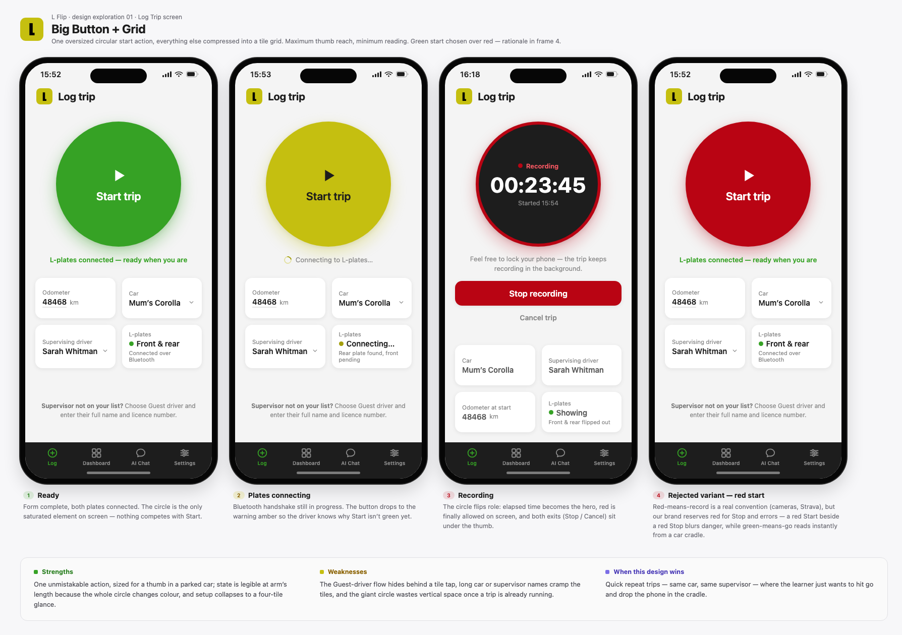
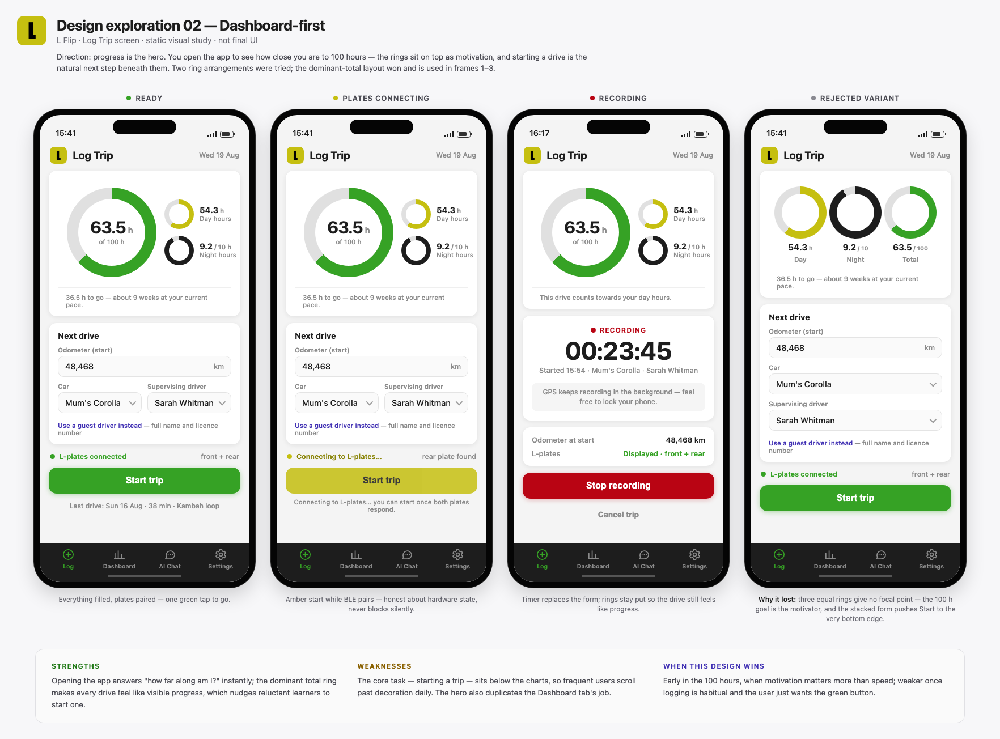
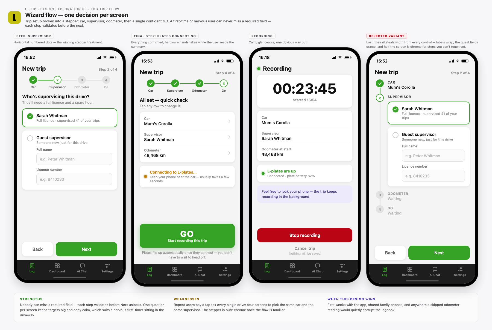
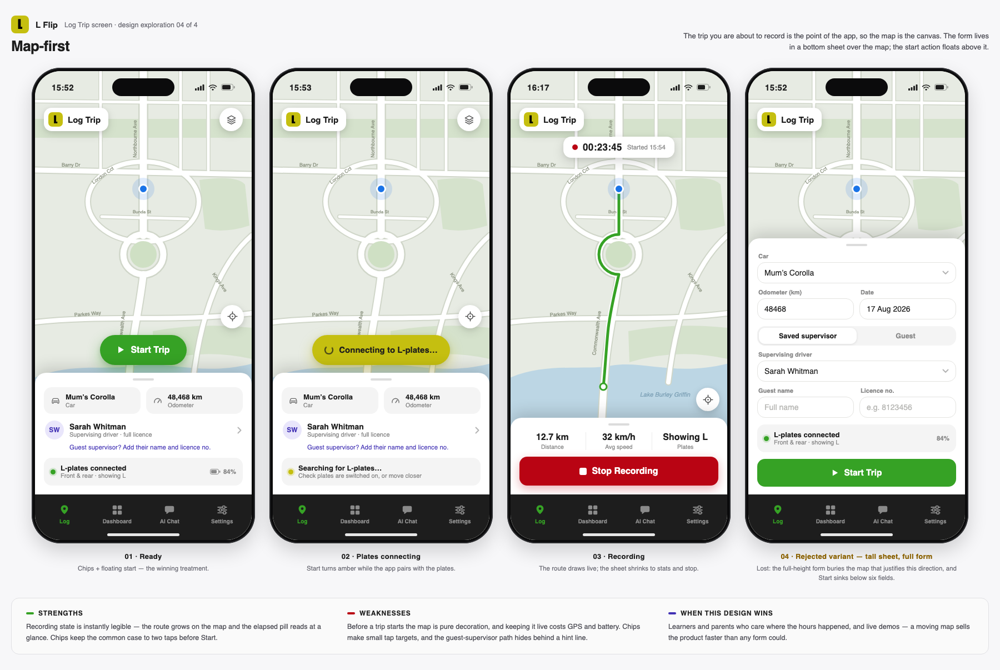
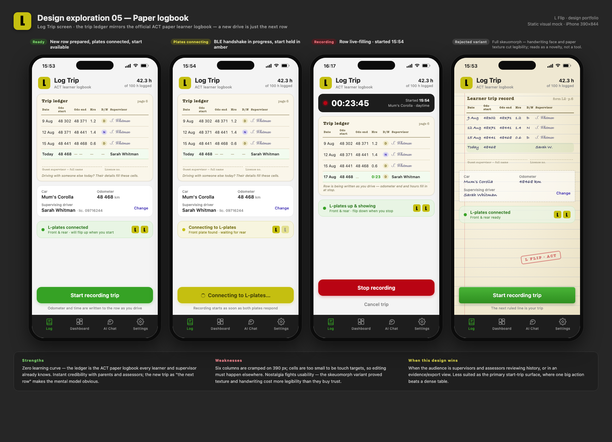
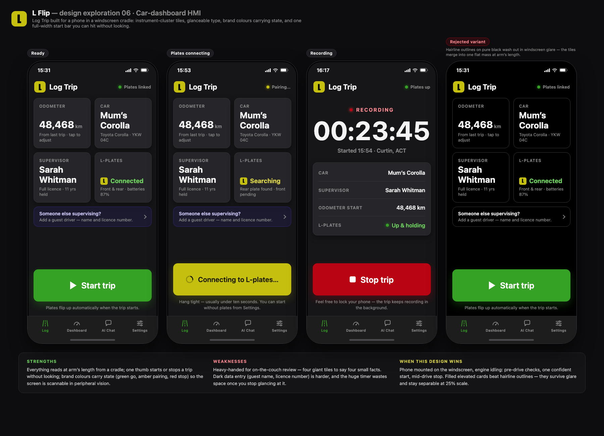

01Big Button + grid

Each sheet: ready / plates connecting / recording / a rejected in-direction variant with its reason, plus the direction’s own strengths, weaknesses and where it wins.





